ash's corner
hiii
welcome to my website on the internet!
please remember, this website is in construction!
in the mean time, care to leave nice words in the guestbook?
or check out the source code and contribute something to this website?
about
my name is jack, but i go by ash online. i don't know what i like better, but you can call me both.
pronouns are all over the place with me. i don't know them either. just use whatever you see fits for me :)
i'm passionate about cybersecurity, i like to code, and i love to play the guitar.
i'm also currently in high school, and also attending a psuedo trade school for cybersecurity. it's cool shit and i've been having a great time. i've never been in a class where i can do things that i'm passoniate about. i've been close with computer science but not close enough. i did enjoy my computer science though because of my all time favorite teacher. thanks for giving me a great year teach :)
if you wanna learn more about me or this website, you can here
status
music
my collection
these are sorted by ranking. first, it's sorted by which artist is my favorite. then, it's the albums within the artists. italics are favorites, and non italics are just there because they're good.
2 - Mac DeMarco
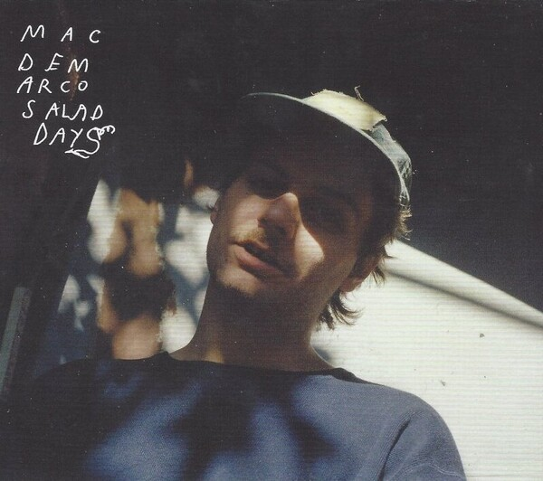
Salad Days - Mac DeMarco
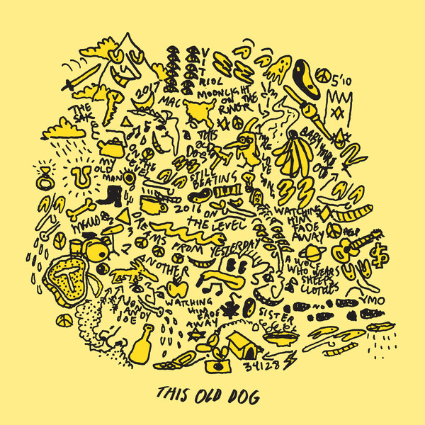
This Old Dog - Mac DeMarco
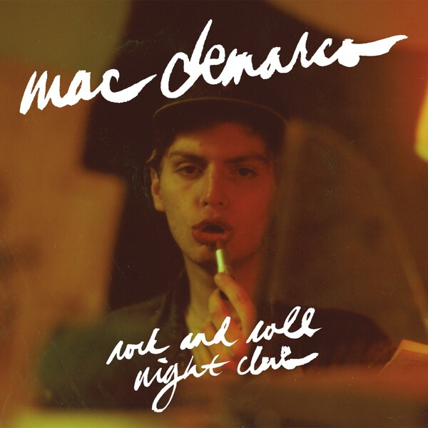
Rock and Roll Night Club - Mac DeMarco
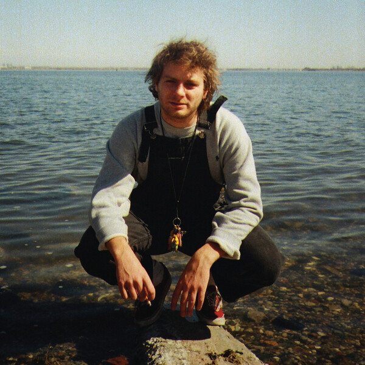
Another One - Mac DeMarco
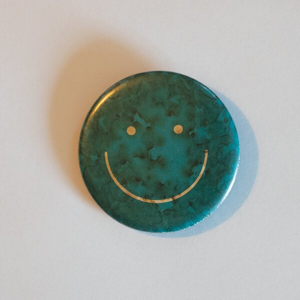
Here Comes the Cowboy - Mac DeMarco
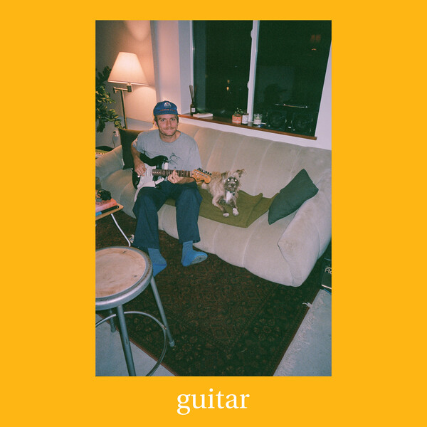
Guitar - Mac DeMarco
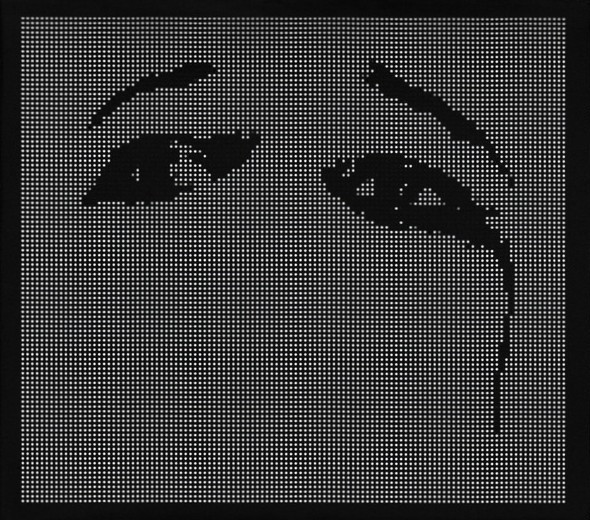
Ohms - Deftones
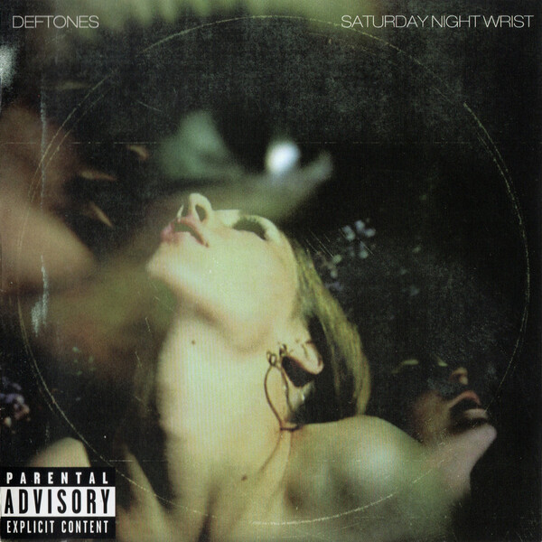
Saturday Night Wrist - Deftones
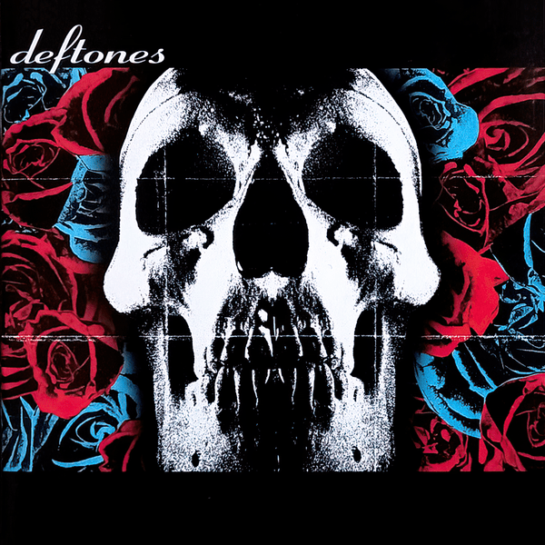
Deftones
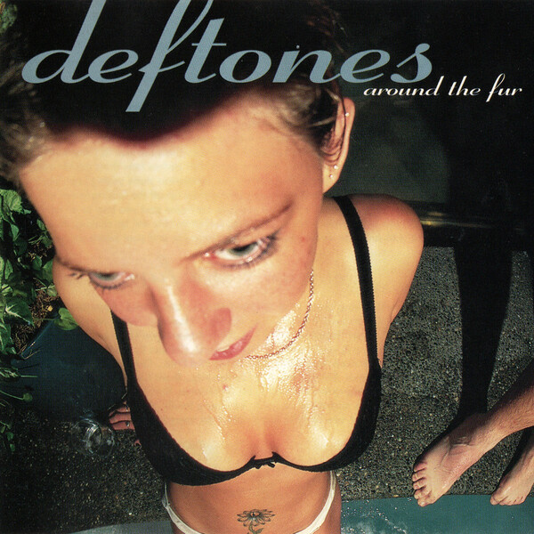
Around The Fur - Deftones
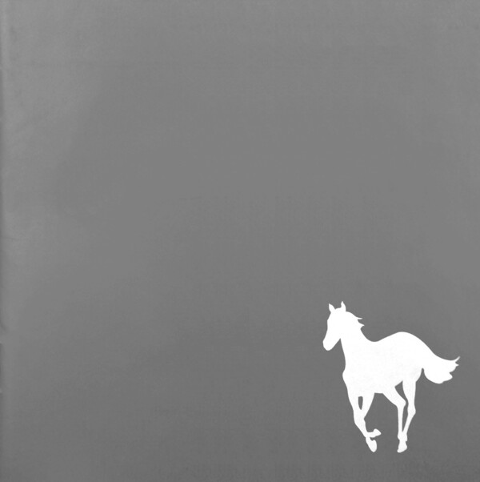
White Pony - Deftones
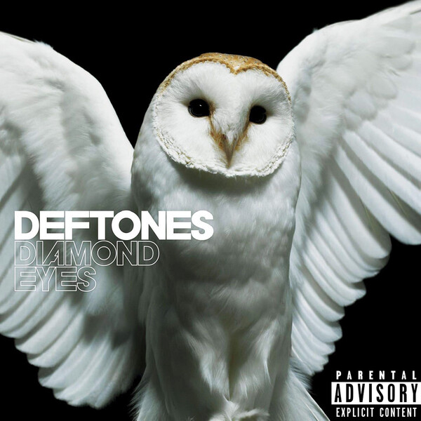
Diamond Eyes - Deftones
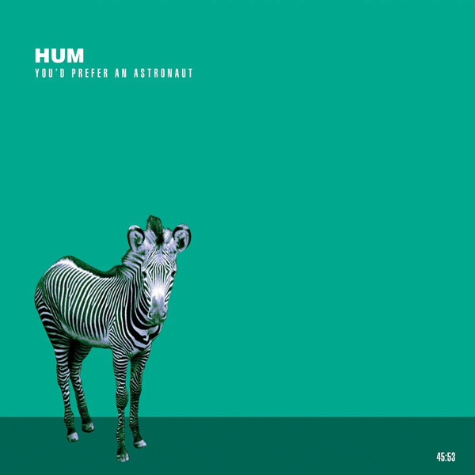
You'd Prefer an Astronaut - Hum
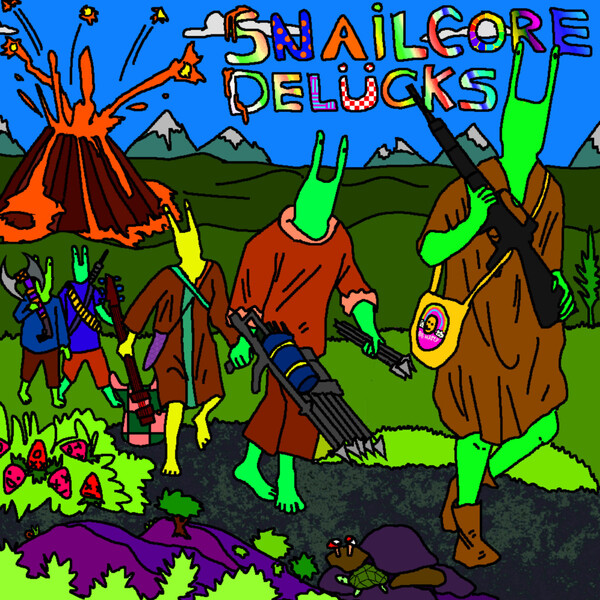
Snailcore Delücks - Gezebelle Gaburgably
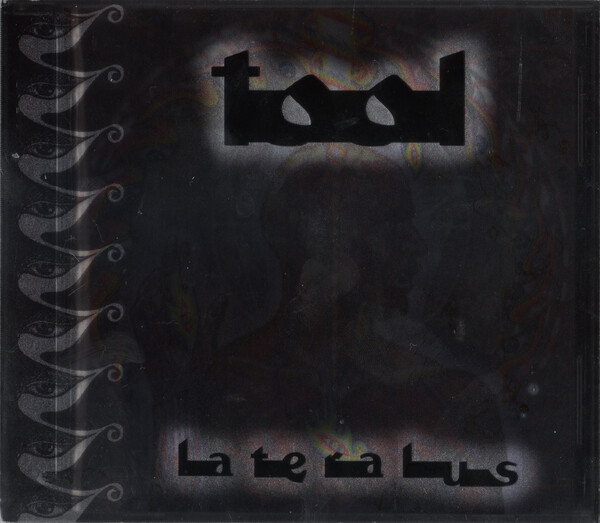
Lateralus - TOOL
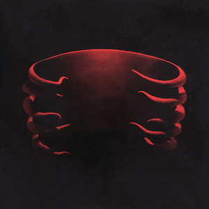
Undertow - TOOL
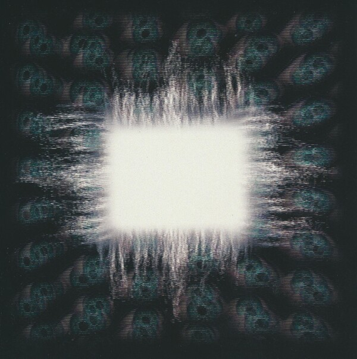
Ænima - TOOL
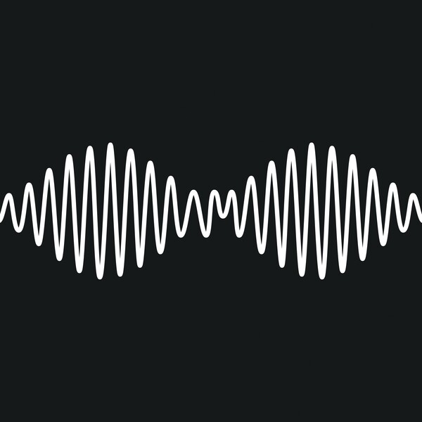
AM - Arctic Monkeys
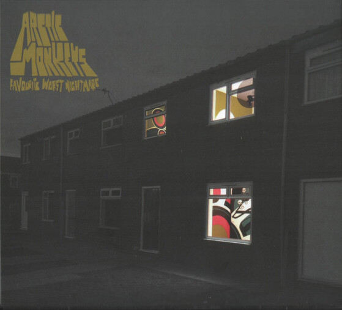
Favourite Worst Nightmare - Arctic Monkeys

Weezer (Blue Album) - Weezer
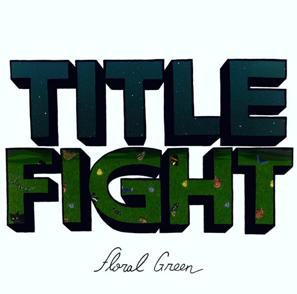
Floral Green - Title Fight
last.fm
i tend to listen to things in albums so that's why it might seem repetitive...
also, thank you stignygaard for the widget!
webrings

hi eepy emma
emma asked to be on this website

counters
counters not loading? disable your adblocker to view them. it's nothing crazy, it's just fc2.com. it's all good if you don't wanna disable your adblocker.
hit counts
currently online
cheer!

made with
❯ hyfetch
' ash@ashey.me
'A' ---------------
'ooo' OS: Artix Linux
'ookxo' Host: ThinkPad 490s
`ookxxo' Kernel: linux-zen
'. `ooko' Editor: vim
'ooo`. `oo' DE: KDE Plasma
'ooxxxoo`. `' Terminal: alacritty
'ookxxxkooo.` . CPU: Intel Core i7-8665U
'ookxxkoo'` .'oo' GPU: Intel UHD Graphics 620
'ooxoo'` .:ooxxo' Memory: 14.90GiB
'io'` `'oo'
'` `'
links and stuff
contact
when you can, please use my GPG key with email and discord. the discord link will take you to my server but my username is also listed needed.
you should also use the things in the order listed. use the one on the bottom the least and the ones on top the most.
donate
please consider donating a few bucks. i don't care if you do or don't, but any cent is appreciated and will go to good things :)
here's my XMR address. that's the only way you can donate to me currently.
86osTRsCuaZQVsKtC39kMZFRxRwWvsKFfCU1DbHpNviujUe8fxCRsYF2kQxcFA9tZN34N3YU8P6byJnFBxjDDLm74L1AABt